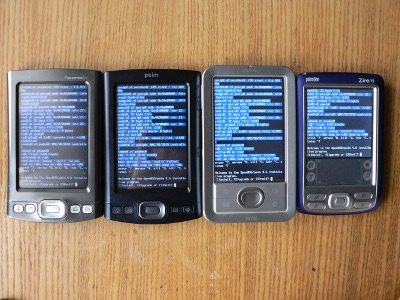

|
OpenBSD/palm was an experimental port of OpenBSD that used to run on PDAs made by Palm with an ARM PXA2xx processor. There was never an official release of the OpenBSD/palm port. The OpenBSD/palm port was discontinued after the 5.3 release. |  |
The Palm port was started as a fork of the Zaurus port in March 2009 with the intention to make the system run on Palm Tungsten|T5. The project was later approved as a semestral work at the Department of Software Engineering, Faculty of Mathematics and Physics, Charles University in Prague mentored by Leo Galambos.
As the project advanced, support for more Palm devices was added as well as support for various peripherals and the project outgrew the initial agreement for the semestral project.
OpenBSD/palm had been tested and was known to be working on the following models: Tungsten|T5, T|X, LifeDrive and the Zire72. There was also initial support for the Palm Tungsten|C.
Support included the LCD, buttons, USB host (through a hub with external power supply), PXA SD/MMC controller and UART (not available on Zire72). On Palm LifeDrive there is also a driver for the builtin hard drive.
{kind=link}